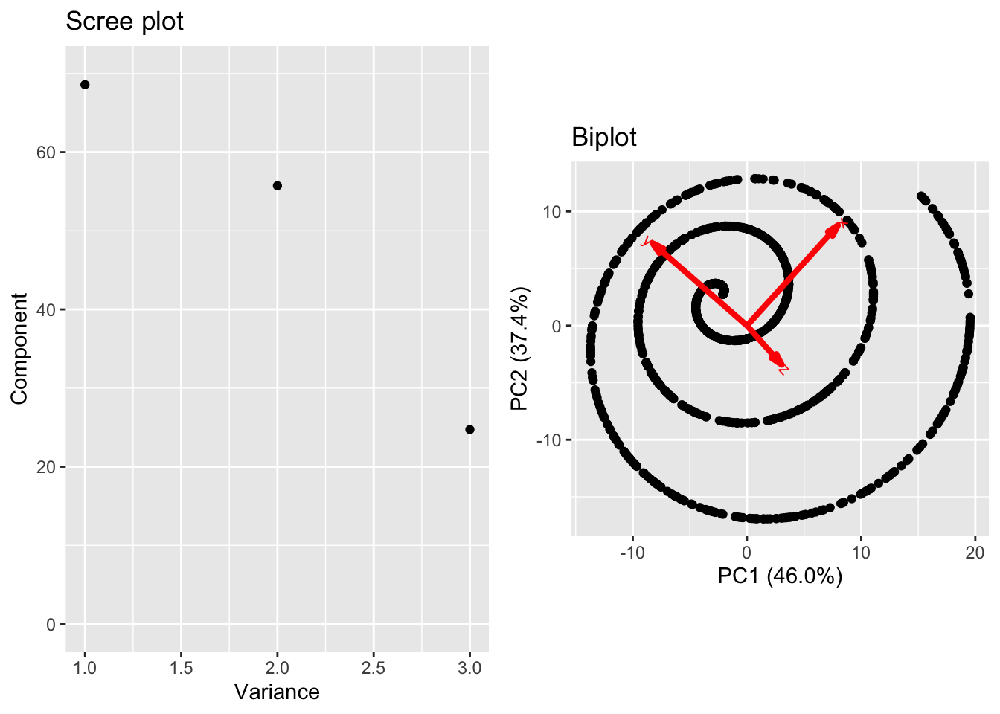
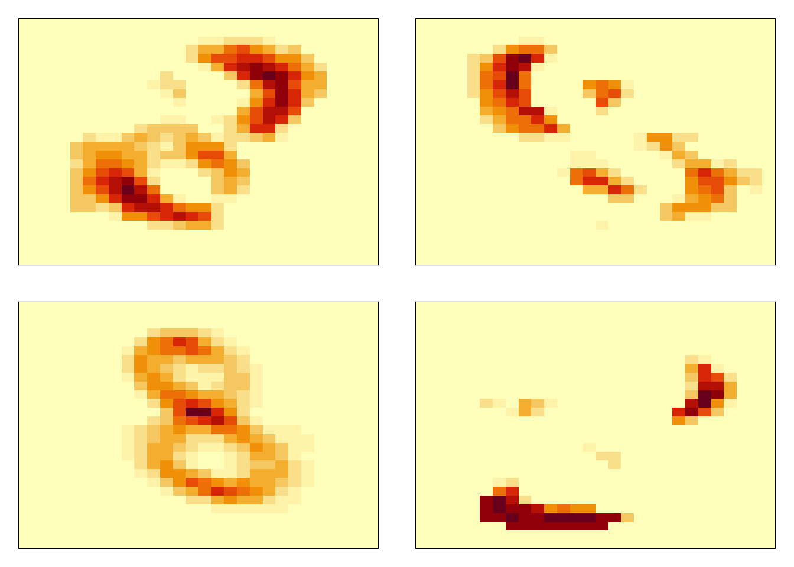

4.3 Nonnegative Matrix Factorization
In both PCA and SVD, we learn data-drive orthonormal feature vectors which we can use to decompose our data in an orderly fashion. Nonnegative matrix factorization (NMF) is again focused on learning a set latent vectors which can be used to approximate our data. However, we will add a few restrictions motivated by experimental data and a desire to increase interpretability of the results which will drastically alter the results.
For NMF, we focus on cases where \({\bf X}\) is an \(N\times d\) data matrix with the added condition that its entries are nonnegative. Notationally, we write \({\bf X}\in\mathbb{R}_{\ge 0}^{N\times d}\) to indicate it is composed of nonnegative real values. The nonnegativity condition is a natural constraint for many experimental data sets, but we are also going to impose a similar constraint on our feature vectors and coefficients. More specifically, for a specific rank \(k\), we seek a coefficient matrix \({\bf W}\in\mathbb{R}_{\ge 0}^{N\times k}\) and feature matrix \({\bf H}\in \mathbb{R}^{k\times d}_{\ge 0}\) such that \({\bf WH}\) is as close to \({\bf X}\) as possible. The nonnegativity constraint on the elements of \({\bf W}\) and \({\bf H}\) implies that \({\bf WH}\in\mathbb{R}_{\ge 0}^{N\times d}\). There are many different measures of proximity that one may use in NMF which are greater than zero and equal to zero if and only if \({\bf X}={\bf WH}\). The most common measures are
Frobenius norm: \(\|{\bf X}-{\bf WH}\|_F.\)
Divergence: \(D({\bf X} \| {\bf WH}) = \sum_{i=1}^N\sum_{j=1}^d \left[{\bf X}_{ij} \log \frac{{\bf X}_{ij}}{({\bf WH})_{ij}} + ({\bf WH})_{ij} - {\bf X}_{ij}\right]\)
Itakura-Saito Divergence: \[D_{IS}({\bf X}, {\bf WH}) = \sum_{i=1}^N\sum_{j=1}^d \left[\frac{{\bf X}_{ij}}{({\bf WH})_{ij}} - \log\frac{{\bf X}_{ij}}{({\bf WH})_{ij}} -1 \right]\]
These loss functions emphasize and prioritize different features of the data and are often coupled with additional penalties or assumptions on the elements of \({\bf W}\) and \({\bf H}\) which we will discuss at the end of the section.
For now, let us focus on the primary motivation of NMF, which is to create more interpretable feature vectors (the rows of \({\bf H}\)).
4.3.1 Interpretability, Superpositions, and Positive Spans
Consider the case of SVD where we can approximate a given vector \(\vec{x}_i\) using the first \(k\) right singular vectors as
\[\vec{x}_i \approx \sum_{j=1}^k \sigma_j {\bf U}_{ij} \vec{v}_j.\] Let us restrict ourselves to the case of nonnegative entries. Suppose for the moment that the \(\ell\)th coordinate of \(\vec{x}_i\) is (very close to) zero and this is reflected by our approximation as well so that \[(\vec{x}_i)_\ell \approx \sum_{j=1}^k \sigma_j {\bf U}_{ij} (\vec{v}_j)_\ell \approx 0.\]
The freedom of the coefficients \(\sigma_j {\bf U}_{ij}\) and the features \((\vec{v}_j)_\ell\) for \(j=1,\dots,k\) to take any value in \(\mathbb{R}\) prevents us from concluding that there is a comparable near-zeroness in the features or coefficients. In could be that case that \({\bf U}_{ij} (\vec{v}_j)_\ell\) is near zero for all \(j=1,\dots,k\) or that some subset are large and positive but are canceled out by a different subset that is large and negative. If, however, we restrict the coefficients and features to be zero this cancellation effect cannot occur. Features can only then be added but never subtracted. Under this restriction, \(\sum_{j=1}^k \sigma_j {\bf U}_{ij} (\vec{v}_j)_\ell\) will only be close to zero if the coefficients are (near) zero for any feature vector which has a (large) positive entry in its \(\ell\)th coordinate.
Thus, in a factorization of the form \[\vec{x}_i \approx \sum_{j=1}^k \underbrace{{\bf W}_{ij}}_{\ge 0} \underbrace{\vec{h}_j}_{\in \mathbb{R}^d_{\ge}},\] we can only superimpose (add) features to approximate our data, we might expect the features themselves to look more like our data. In matrix notation, we have \[{\bf X} = {\bf WH}\] where the coefficients for each sample are stored in the rows of \({\bf W}\in\mathbb{R}^{N\times k}_{\ge 0}\) and the features are transposed and listed as the rows of \({\bf H}\in\mathbb{R}^{k\times d}\).
4.3.2 Geometric Interpretation
As a motivating example consider the case, where we have data \(\vec{x}_1,\dots,\vec{x}_N\in\mathbb{R}^3_{\ge 0}\) for which there is a exact decomposition \[{\bf X} = {\bf WH}\] which is to say there are nonnegative coefficients, \({\bf W}\) and feature vectors \(\vec{h}_1,\vec{h}_2 \in \mathbb{R}_{\ge 0}^3\) such that \[\vec{x}_i = {\bf W}_{i1}\vec{h}_1 + {\bf W}_{i2}\vec{h}_2 \qquad \text{ for } i =1,\dots,N.\] The nonnegativity condition on data implies that \(\vec{x}_1,\dots,\vec{x}_N\) reside in the positive orthant of \(\mathbb{R}^3.\) The exact decomposition assumptions implies \(\{\vec{x}_1,\dots,\vec{x}_N\} \in \text{span}\{\vec{h}_1,\vec{h}_2\}\) and furthermore the following more restricted picture holds.Figure 4.8: Data in the positive span of two vectors
The data are constrained within the positive span of the vectors, a notion we may now define.
Definition 4.2 (Positive Span) The positive span of a set of vectors \(\{\vec{h}_1,\dots,\vec{h}_k\}\in\mathbb{R}^d\) is the set \[\Gamma\left(\{\vec{h}_1,\dots,\vec{h}_k\}\right) = \left\{\vec{v}\in\mathbb{R}^d \, \bigg|\, \vec{v} = \sum_{j=1}^k a_j \vec{h}_j, \, a_1,\dots,a_k \ge 0\right\}.\] This set is also called the simplicial cone or conical hull of \(\{\vec{h}_1,\dots,\vec{h}_k\}\).
In the motivating example above, our data live in the positive span of the two feature vectors, thus we say the data matrix \({\bf X}\) has a nonnegative matrix factorization \({\bf WH}\).
Thus, we may view NMF as a restricted version of PCA or SVD where we have moved from spans to positive spans. This seemingly small change gives rise to some big problems. Even in this simple case above we have a uniqueness problem. Up to sign changes and ordering, the feature vectors in PCA and SVD were unique. However, we can find two alternative vectors \(\vec{h}_1'\) and \(\vec{h}_2'\) which still give a exact NMF. There are trivial cases. First, one can change ordering (\(\vec{h}_1' =\vec{h}_2\) and \(\vec{h}_2' = \vec{h}_1\)) which we avoid in PCA and SVD by assuming the corresponding singular values of PC variances are listed in decreasaing order. Secondly, we could rescale by setting \(\vec{h}_1' = c\vec{h}_1\) and rescaling the corresponding coefficients by a factor of \(1/c\) for some \(c > 0\) which PCA and SVD avoid by fixing feature vectors to have unit length. The ordering issue is a labeling concern and may be ignored, whereas the rescaling issue can be addressed by adding constraints on the length of the feature vectors.
A third and far more subtle issue occurs because we do not enforce orthogonality. In @ref[fig:nmf-ex], imagine that the feature vectors are the arms of a folding fan. We could change the angle between our feature vectors by opening or closing the arms of the fan. So long as we do not close the fan too much (and leave our data outside the positive span) or open them too much (so that feature vectors have negative entries), we can still find a perfect reconstruction. This `folding fan’ issue can be addressed through additional penalties which we discuss in @ref{sec-nmf-ext}, but nonuniqueness cannot be eliminated entirely. Thus, we seek an NMF for our data rather than the NMF.
4.3.3 Finding an NMF: Multiplicative Updates
For a given choice of error, the lack of a unique solution also means there is no closed form solution for \({\bf W}\) and \({\bf H}\). Thus, we will need to apply numerical optimization to find a \({\bf W}\) and \({\bf H}\) which minimizes the selected error, \[\mathop{\mathrm{arg\,min}}_{{\bf W}\in\mathbb{R}^{N\times k}_{\ge 0}, {\bf H}\in\mathbb{R}^{k\times d}_{\ge 0}} D({\bf X},{\bf WH})\]. The loss is a function of all of the entries of \({\bf W}\) and \({\bf H}\). To apply any type of gradient based optimization, we need to compute the partial derivative of our loss with respect to each of the entries of these matrices.
As an example, we will focus on the divergence and show the relevant details. For gradient based optimization, we then need to compute \(\frac{\partial }{\partial {\bf W}_{ij}} D({\bf X}\| {\bf WH})\) for \(`\le i \le N\) and \(1\le j\le k\) and \(\frac{\partial }{\partial {\bf H}_{j\ell}} D({\bf X}\| {\bf WH})\) for \(1\le j \le k\) and \(1\le \ell \le d.\) Note that \[({\bf WH})_{st} = \sum_{j=1}^k{\bf W}_{sk}{\bf H}_{kt}\] so that \[\frac{\partial ({\bf WH})_{st}}{\partial ({\bf WH})_{ij}} = \begin{cases} {\bf H}_{jt} & s = i \\ 0 & s\ne i \end{cases}\] Thus, we may may make use of the chain rule to conclude that \[\begin{align*} \frac{\partial }{\partial {\bf W}_{ij}} D({bf X}\| {\bf WH}) &= \frac{\partial }{\partial {\bf W}_{ij}}\sum_{st} \left({\bf X}_{st} \log(({\bf X})_{st}) - {\bf X}_{st} \log(({\bf WH})_{st}) + ({\bf WH})_st - ({\bf X})_{st}\right)\\ &=\frac{\partial }{\partial {\bf W}_{ij}}\sum_{st} \left(- {\bf X}_{st} \log(({\bf WH})_{st}) + ({\bf WH})_{st} \right) \\ &=\sum_{st}\left(\frac{{\bf X}_{st}}{({\bf WH}_{st})} + 1\right)\frac{\partial ({\bf WH})_{st}}{\partial {\bf W}_{ij}} \\ &=\sum_{t=1}^d \left(-\frac{{\bf X}_{it}}{({\bf WH}_{it})} + 1\right){\bf H}_{jt}. \end{align*}\] A similar calculation gives \[\frac{\partial }{\partial {\bf H}_{ij}} D({bf X}\| {\bf WH}) = \sum_{s=1}^N \left(-\frac{{\bf X}_{sj}}{({\bf WH})_{sj}} + 1\right) {\bf W}_{sj}.\] In a standard implementation of gradient descent, we choose a step size \(\epsilon >0\) and apply the updates \[\begin{equation} \begin{split} {\bf W}_{ij} \leftarrow {\bf W}_{ij} - \epsilon \sum_{t=1}^d \left(-\frac{{\bf X}_{it}}{({\bf WH}_{it})} + 1\right){\bf H}_{jt} \\ {\bf H}_{ij} \leftarrow {\bf H}_{ij} - \epsilon \sum_{s=1}^N \left(-\frac{{\bf X}_{sj}}{({\bf WH})_{sj}} + 1\right) {\bf W}_{sj} \end{split} \end{equation}\] to each entry of \({\bf W}\) and \({\bf H}\) simultaneously. Alternatively, we could consider coordinate descent where we update each entry of \({\bf W}\) (holding all other entries of \({\bf W}\) and \({\bf H}\) constant) separately then do the same for \({\bf H}\) then repeat. Each approach will converge to a local mode (though possibly different ones) when \(\epsilon\) is sufficiently small. However, if \(\epsilon\) is too small it may take many iterations to converge. Unfortunately, choosing \(\epsilon\) can create a numerically unstable algorithm (that doesn’t converge at all) or one where we lose the nonnegativity condition on the entries of \({\bf W}\) or \({\bf H}\).
To preserve nonnegativity, [10] developed a set of state dependent step-sizes (one for each entry of \({\bf W}\) and \({\bf H}\)) which result in multiplicative rather than additive updates. IFor divergence, they take step sizes \[\epsilon_{ij}^{W} = \frac{{\bf W}_{ij}}{\sum_t {\bf H}_{jt}} \text{ and } \epsilon_{ij}^H = \frac{{\bf H}_{ij}}{\sum_s {\bf W}_{sj}}.\] These step size are proportional to the entries we are updating so that we take larger steps for larger entries of \({\bf W}\) of \({\bf H}\). If we substitute these step sizes in the updates simplify to
\[\begin{equation} \begin{split} {\bf W}_{ij} \leftarrow {\bf W}_{ij} \left[\frac{\sum_t \left({\bf H}_{jt}{\bf X}_{it}/({\bf WH}_{it})\right)}{\sum_t {\bf H}_{jt}} \right] \\ {\bf H}_{ij} \leftarrow {\bf H}_{ij} \left[\frac{\sum_s\left({\bf W}_{si}{\bf X_{sj}}/({\bf WH})_{si} \right)}{\sum_s {\bf W}_{si}}\right] \end{split} \end{equation}\]
indicating that we rescale the entries of \({\bf W}\) and \({\bf H}\) by some nonnegative value which is guaranteed to preserve the nonnegativity of each entry. One can verify that the multiplicative updates simplify to one when \({\bf X}= {\bf WH}.\) One can then iteratively update the entries of \({\bf W}\) and \({\bf H}\) one at a time, in blocks, or all together until a local mode is reached.
Multiplicative update rules for other choices of loss are also available in [10] but are also provided as exercises for the reader.
4.3.4 NMF in practice
For a given choice of loss, standard NMF proceeds in the following manner.
- Choose a rank \(k\) and initial \({\bf W}_\in\mathbb{R}^{N\times k}_{\ge 0}\) and \({\bf H}\in\mathbb{R}^{k\times d}_{\ge 0}\).
- Apply the multiplicative rule until a local minimum is reached.
- Repeats steps (1) and (2) for different initial conditions then select the final \({\bf W}\) and \({\bf H}\) which give the lowest overall loss.
Different initial conditions (ICs) will converge to different local modes; reptition over multiple differents (ICs) will help find a better overall minimizer and avoid getting a final NMF which is trapped in a poor local mode. There is no guidance of how many ICs. Many packages default to five. More would be better but computational resources are not infinite, and finding even one mode though coordinate ascent can be slow.
The choice of \(k\) is also challenging. In prior information or other project constraints dictate a specific choice of \(k\) one should use that value. However, the preceding steps can be repeated over a range of \(k\). One can then compare plot the optimal loss as a function of \(k\) and look for a cutoff where the error appears to saturate. Importantly, there are no connections between the rank \(k\) NMF and rank \(k+1\) NMF. Unlike, PCA or SVD, one cannot truncate the vectors and coefficients and attain an optimal solution for a lower-dimensional representation. Thus, separate fits at each choice of \(k\) must be attained through separate runs of the numerical optimization.
Example 4.2 (NMF applied to MNIST) As an example, we show NMF applied to the first \(100\) eights (to save computation time) from the MNIST dataset [1] using Divergence with five runs per rank. Below we fit separate NMFs for ranks 1 through 25 with 5 random initializations per fit. Optimal divergence as a function of rank is shown below.

There is no clear elbow like feature in the plot that would clearly suggest an optimal rank between 1 and 25. If we select a rank 4 NMF, we do get interpretable 8-like images as our feature images(vectors) shown below.

Compare this to the less 8-like images found using the features given by a rank 4 approximation from SVD.

4.3.5 Regularization and Interpretability
For a random initialization, the values of \({\bf W}\) and \({\bf H}\) obtained when the multiplicative rules are run to convergence not resemble the original data, which is contrary to our original goal of finding features which are more comparable to the data. More specifically, the feature vectors \(\vec{h}_1,\dots,\vec{h}_k\) which are superimposed to approximate the observations may appear quite different from the observations themselves. Many extensions of NMF address this issue through the inclusion of additional penalties on the elements of \({\bf W}\) or \({\bf H}\) which induce sparsity in the coefficients \({\bf W}\) and/or constrain the features to be more similar to the data. In practice, it is insufficient to apply penalties which depend solely on the scaling of either \({\bf W}\) or \({\bf H}\) as these can typically be made arbitrarily small by increasing corresponding elements of \({\bf H}\) or \({\bf W}\) respectively. Thus, any penalty which depends on the scaling of one matrix often includes additional constraints or penalties on the other.
Briefly, we discuss two version which are constructed to generate features which strongly mimic the original observations.
4.3.5.1 Archetypes
Before discussing Archetypal Analysis, we need an additional geometric idea.
Given a set of vectors \(\mathcal{H}=\{\vec{h}_1,\dots,\vec{h}_k\}\subset\mathbb{R}^d\), the convex hull of \(\mathcal{H}\) is the set \[\text{conv}(\mathcal{H}) = \{b_1\vec{h}_1+\cdots + b_k \vec{h}_k: b_1,\dots,b_k \ge 0,\, c_1+\dots+c_k = 1\}\]
The weights in the above definition are constrained to be positive, similar to the definition of positive span, but with the added constraint that they sum to one. Thus, for a set of vectors \(\mathcal{H}\)
\[\text{conv}(\mathcal{H}) \subset \Gamma(\mathcal{H}) \subset \text{span}(\mathcal{H}).\] An example of a convex hull (shown in grey) of set of vectors (points in red) in \(\mathbb{R}^2\) is shown below. Imagine wrapping a string around the set of points and pulling it tight. Everything on/within the loop is in the convex hull. An analogous interpretation holds in higher dimensions using a “sheet” rather than a string.

Importantly, we can view the coefficient \(c_1,\dots,c_k\) as defining (probability) weights. Thus, every point in the convex hull of \({\bf H}\) is a weighted average of the vectors in \(\mathcal{H}\) and one then expects any point in the convex hull of \(\mathcal{H}\) to resemble the vectors in \(\mathcal{H}\). In archetypal analysis [11], we add the constraint that the features (row of \({\bf H}\)) are themselves elements in the convex hull of the original data so that \({\bf H}= {\bf B X}\) where \({\bf B}\in\mathbb{R}_{\ge 0}^{k\times N}\) must satisfy the constraint \({\bf B}\vec{1}_N = \vec{1}_k\).
Under this setup, we then want to solve the following constrained optimization problem \[\mathop{\mathrm{arg\,min}}_{{\bf W}\in \mathbb{R}_{\ge 0}^{N\times k},\,{\bf B}\in\mathbb{R}_{\ge 0}^{k\times N}, {\bf B}\vec{1}_N = \vec{1}_k}\| {\bf X}- {\bf WBX}\|_F.\]
The rows of \({\bf BX}\), called archetypes, reside are typically extremal in the sense that they reside on the boundary of the convex hull of the data. We show them below for a rank four approximation to the eights.

4.3.5.2 Volume Regularized NMF
Much like Archetype Analysis, Volume regularized NMF creates feature vectors which resemble the observation through a more geometric approach [13]. Suppose that we are seeking a rank \(k\) approximation of data in \(d\) dimensions with \(k<d\). If the vectors \(\vec{h}_1,\dots,\vec{h}_k\) are affinely independent, i.e. they don’t live on a hyperplane of dimension less than \(k\), then the volume of the convex of hall of the vectors is given by the following formula \[\text{vol}\left(\text{conv}(\{\vec{h}_1,\dots,\vec{h}_k\})\right) = \frac{\sqrt{\text{det}(\tilde{\bf H}\tilde{\bf H}^T})}{(k-1)!}\] where \[\tilde{\bf H} = \begin{bmatrix} \vec{h}_1^T-\vec{h}_k^T \\ \vdots \\ \vec{h}_{k-1}^T-\vec{h}_k^T\end{bmatrix} \in \mathbb{R}^{(k-1)\times d}.\] An extension of this result is that for linearly independent vectors \(\vec{h}_1,\dots,\vec{h}_k\), the volume of the convex hull of the vectors \(\vec{0},\vec{h}_1,\dots,\vec{h}_k\) can be computed directly from our feature matrix \({\bf H}\), i.e. \[\text{vol}\left(\text{conv}(\{0,\vec{h}_1,\dots,\vec{h}_k\})\right) = \frac{\sqrt{det({\bf H}{\bf H}^T})}{(k)!}.\]
One brief aside on the notion of volume here that is not typically made clear in the related literature. When \(k < d\), the convex hull of \(\vec{0},\vec{h}_1,\dots,\vec{h}_k\) is contained in a \(k\)-dimensional hyperplane. Thus, its \(d\)-dimensional volume must be zero. When we talk of the volume of a convex hull, we instead mean its \(k\)-dimensional volume. As an example, consider the case of a single vector \(\vec{h}_1\) in \(\mathbb{R}^3.\) The convex hull of \(\vec{0},\vec{h_1}\) is the line segment from the origin to \(\vec{h}_1\). Line segments have zero 3-dimensional volume, but they do have length (1-dimensional volume). In this case, the 1-dimensional volume of the convex hull is the length of the line segment, e.g. \(\|\vec{h}_1\|\).
Incorporating a penalty on the volume of the convex hull of the feature vectors gives rise to the aptly named volume-regularized NMF \[\mathop{\mathrm{arg\,min}}_{{\bf W}_\in\mathbb{R}_{\ge 0}^{N\times k}, {\bf W}\vec{1}_N = \vec{1}_k, {\bf H}\in \mathbb{R}_{\ge 0}^{k\times d}} \|{\bf X}-{\bf WH}\|_F^2 + \lambda \sqrt{\text{det}({\bf HH}^T)}\] here the constraint \({\bf W}\vec{1}_N = \vec{1}_k\) requiring that the rows of \({\bf W}\) sum to one prevents an arbitrarily shrinkage of the feature vectors towards zero. In some numerical implementation, this constraint is relaxed so that the sum of the rows of \({\bf W}\) are bounded above by one. The value \(\lambda\) is tuning parameter that must be specified by the user to balance goodness of fit vs minimal volume. Below we show the results of volume regularized NMF applied to the subset of the eights data studied above.

4.3.6 NMF and Maximum Likelihood Estimation
Throughout this section we have focused on the geometric aspects of NMF, but there are parallel statistical perspectives based on maximum likelihood estimation. For example, consider the model \[{\bf X}_{ij} \mid ({\bf WH}_{ij}) \sim \mathcal{N}\left(({\bf WH}_{ij},\sigma^2\right), \qquad 1\le i\le N, 1\le j\le d\] with the additional assumption that the observations in \({\bf X}\) are conditionally independent given \(({\bf WH})\) and that \({\bf WH}\) is low-rank. Under this framework the likelihood of the data is then \[\mathcal{L}({\bf X}\mid{\bf WH}) \propto \prod_{i=1}^N\prod_{j=1}^d \exp\left(-\frac{({\bf X}_{ij}-({\bf WH}_{ij}))^2}{\sigma^2}\right)\] which has log-likelihood \[\log \mathcal{L}({\bf X}\mid{\bf WH}) = -\frac{1}{\sigma^2}\prod_{i=1}^N\prod_{j=1}^d ({\bf X}_{ij}-({\bf WH}_{ij}))^2 = -\frac{1}{\sigma^2}\|{\bf X}-{\bf WH}\|_F^2.\] Thus, minimizing the Frobenius norm is equivalent to maximizing the likelihood in this normal model with homoskedastic errors.
Similarly, divergence arises from a Poisson model \[{\bf X}_{ij} \mid {\bf WH}_{ij} \sim \text{Pois}\left(({\bf WH})_{ij}\right)\] again with a low rank structure for \({\bf WH}\) and the conditional independence assumption on the entries of \({\bf X}\) given \({\bf WH}\).
The IS divergence again uses conditional independence and a low rank structure for \({\bf WH}\) under the assumption of multiplicative Gamma distributed errors with mean one, i.e. \[{\bf X}_{ij} \mid {\bf WH}_{ij} = ({\bf WH})_{ij} e_{ij}, \, e_{ij} \sim \text{Gamma}(\alpha,\beta)\] with \(\alpha/\beta = 1\). See [14] for additional details.